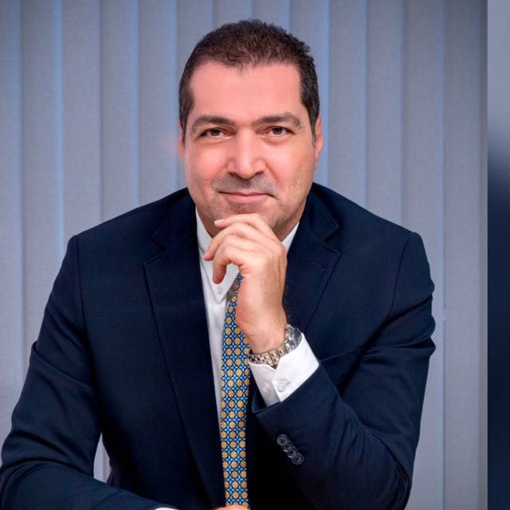

Daha Fazlası
Tüm blog yazılarını kategorilere göre okuyabilirsiniz.
Tüm Makaleleri Gör
23 yılı aşkın deneyimi ile beyin ve sinir sistemi hastalıklarının tanı ve tedavisinde hastalarına özenli, kişiselleştirilmiş ve kanıta dayalı tıbbi yaklaşım sunmaktadır.


2003 yılında Çukurova Üniversitesi Tıp Fakültesi’nden mezun olmuştur. 2004-2009 yılları arasında Dokuz Eylül Üniversitesinde uzmanlık eğitimini tamamlamıştır. 2012 yılından itibaren Çukurova Üniversitesi Tıp Fakültesi Nöroloji Anabilim Dalında öğretim üyesi olarak çalışmaya başlamıştır. 2014 yılında Çukurova Üniversitesi Nöroloji Anabilim Dalı ''Davranış Nörolojisi (Alzheimer hastalığı ve diğer demansiyel sendromlar)'' polikliniğini kurmuştur. Akademik hayatı süresince ''Demans’’, ‘’Hareket bozuklukları (Parkinson Hastalığı, vs...)’’, ‘’Botulinum Toksin Uygulamaları (Botox, vs..)’’, ‘’Baş ağrısı’’ polikliniklerinin yanı sıra ‘’Elektromyografi (EMG)’’ laboratuvarının sorumlu öğretim üyeliğini yapmıştır. 2017 yılında doçent, 2024 yılında profesör unvanı almıştır. 2026 yılında Çukurova Üniversitesi Tıp Fakültesi Nöroloji Anabilim Dalından ayrılmıştır. Halen Özel Adana Ortadoğu Hastanesi’nde çalışmalarını sürdürmektedir.
Profesör unvanı ile akademik çalışmalar
Kişiselleştirilmiş tedavi yaklaşımı
Kanıta dayalı tıp uygulamaları
Modern tıbbın tüm imkanlarını kullanarak, beyin ve sinir sistemi hastalıklarının tanı ve tedavisinde size en iyi hizmeti sunuyoruz.
Demans sendromları, Alzheimer ve Parkinson hastalığında bellek, davranış ve günlük işlev bozukluklarının ayrıntılı değerlendirilmesi ve güncel tedavi yaklaşımlarının planlanması.
İlgili MakalelerHafıza, dikkat, yürütücü işlevler ve davranış alanlarında ayrıntılı nöropsikolojik değerlendirme, tanısal raporlama ve tedavi sürecine yönelik geri bildirim.
İlgili MakalelerMigren ve diğer baş ağrıları, baş dönmesi şikayetleri ve uygun hastalarda sinir blokajı gibi girişimsel ağrı tedavileri.
İlgili MakalelerHemifasiyal spazm, blefarospazm, bruksizm (diş gıcırdatma), nöropatik ağrı, siyalore (tükürük salgısı), yazıcı krampı, hiperhidrozis (terleme), migren, distoni ve spastisite gibi nörolojik endikasyonlarda botulinum nörotoksin uygulamaları.
İlgili MakalelerObstruktif uyku apne sendromu, uykusuzluk, huzursuz bacak sendromu ve diğer uyku bozukluklarının tanı ve tedavisi.
İlgili Makalelerİnme (felç), geçici iskemik atak ve beyin damar tıkanıklıklarının tanı, risk faktörü yönetimi ve tedavisi.
İlgili MakalelerPeriferik sinir, kök ve kas hastalıklarının elektrofizyolojik (EMG) yöntemlerle ayrıntılı değerlendirilmesi.
İlgili MakalelerEpilepsi (sara) nöbetlerinin tanısı, tedavi planlanması ve EEG ile beyin elektriksel aktivitesinin değerlendirilmesi.
İlgili MakalelerMyasthenia Gravis, Multiple Skleroz, ALS ve kas hastalıkları başta olmak üzere diğer nörolojik hastalıkların kapsamlı değerlendirilmesi ve tedavisi.
İlgili MakalelerNöroloji alanındaki güncel gelişmeler ve sağlıklı yaşam önerileri.
Güncel nöroloji haberleri, hasta bilgilendirme yazıları ve Prof. Dr. Ahmet Evlice'nin blog içeriklerine buradan ulaşabilirsiniz.
Etkinlikler, medya görünürlükleri ve klinik çalışmalarımıza ait güncel görselleri inceleyebilirsiniz.
Prof. Dr. Ahmet Evlice'nin ulusal ve uluslararası medyada yer alan röportajları, TV programları ve haberleri.
Adana Alzheimer Derneği Etkinliği
Haberi OkuTürkiye Alzheimer Derneği Adana Şubesi
Haberi OkuYer Aldığımız Medya Kuruluşları
Sorularınız için bizimle iletişime geçebilirsiniz.
Ziyapaşa, 67055. Sk. No:1
01140 Seyhan/Adana
Pazartesi - Cuma: 09:00 - 17:00
Cumartesi: 09:00 - 13:00